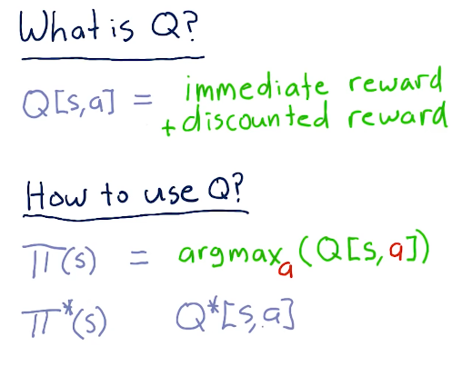
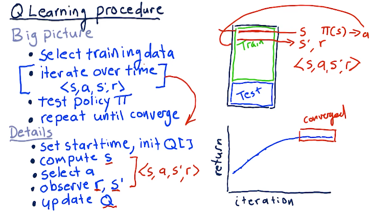
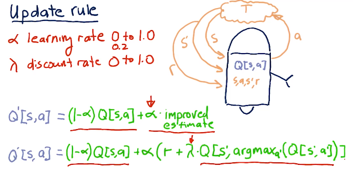
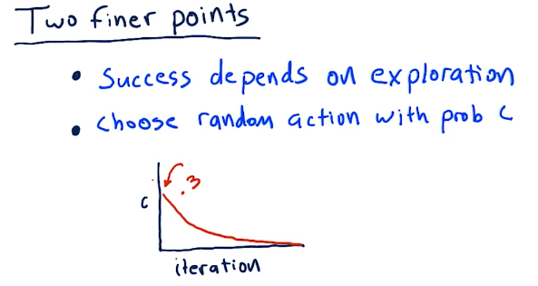
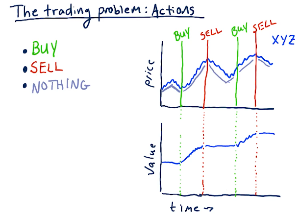
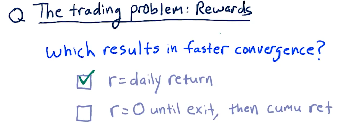
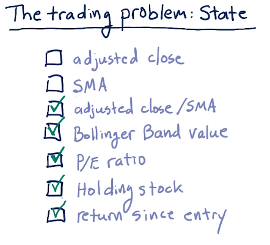
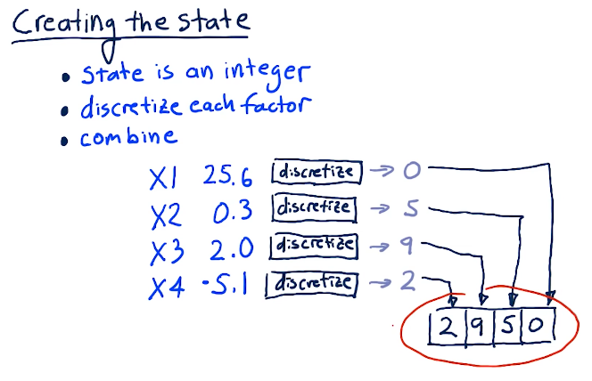
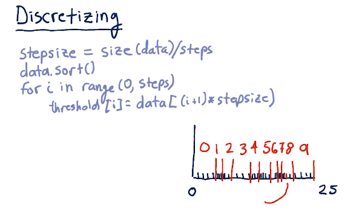

3-6: Q-learning
Q-learning is a model-less approach. It does not care about or use models of transition functions like T or rewards functions like R. Q-learning builds a table of utility values, or Q-values, at each step to select the best action based on what it has learned so far. The best thing about Q-learning is it is guaranteed to provide an optimal policy.
What is Q?
Q is similar to the other functions like T and R, however, it represents the immediate reward and discounted reward for an action taken in a specific state. Q is not greedy, and considers the discounted reward - so what happens today and tomorrow.
We use Q to generate a policy, pi, by finding the maximized argument value for action to maximize the Q value. Eventually, we'll have an optimal policy.

Q-learning procedure
A series of things occurs when training our Q-learning model and generating our Q table:
- First, we select our training data
- We iterate over this time-series data
- We set a start time and initialize our Q table
- We compute the starting state S given the inputs
- We select our action A
- We observe our end state S' and our reward
- We update Q based on the outcomes
- Once we've generated our Q table, we test the policy, pi against testing data
- Finally, we repeat until convergence, resulting in no further improvements
A high-level overview of these concepts is provided below:

Update rule
One of the most important parts of Q-learning is the update rule. We can break it down into simpler terms wherein our new Q table, Q prime, is equal to our old Q table times 1 minus alpha, the learning rate, plus alpha times our reward plus gamma times the Q table value derived from alpha prime of our next decision to reach S prime. The writeup for the update rule equation is provided in the lecture slide below:

Two finer points
Q-learning is successful when we explore, and we can do that by taking random actions. We can choose random actions with probability of C. So as we begin to learn, we start out with C's probability of us choosing a random action to be pretty high. As we begin to learn more, our actions become less random.

Actions
For our stock trading Q-learner, the following are some actions that can be taken to transition to different states:
- Buy
- Sell
- Nothing
Below is an example from the lectures:

Rewards
Daily returns for a reward signal to the Q-learner allows the learner to converge must faster than a cumulative return.

State
Below are some good factors for state to be used during Q-learning:

Creating the state
In order for us to create the state, we have to translate all of our factors into discrete integers. Some algorithm will conduct this, and then we'll finally combine our factors into one number. Below is a lecture from the slides:

Discretizing
Below is a quick breakdown from the lecture on how to discretize our data:
